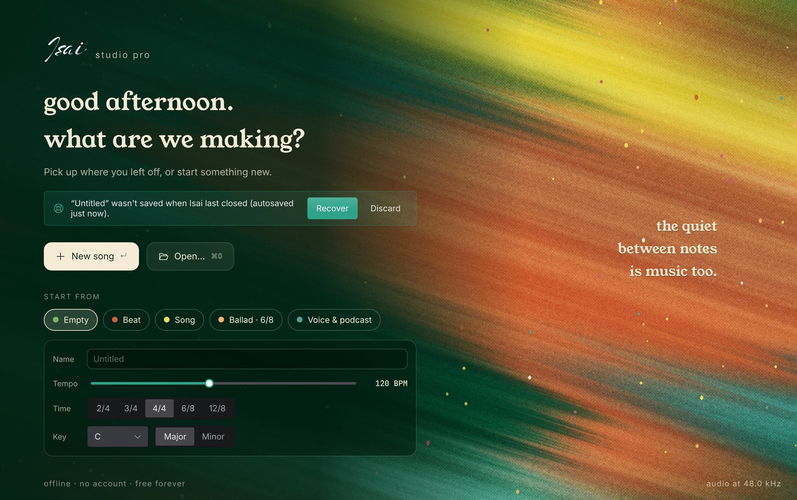

Arrange a song
- Move, trim, split, fade and loop regions
- Loops follow your tempo, pitch stays put
- Markers, cycle and full undo history
Open the playlist F5
A free music studio for any computer. Record, write, mix and master on macOS, Windows and Linux, offline and yours.


Isai opens on a painting, not a wall of buttons. Pick a template, set the tempo and key, and press Return.

Isai is not a trial, a subscription or a cut-down "lite" edition.
It brings together the tools that usually cost hundreds: a playlist, a piano roll, instruments, a mixer, effects and mastering, in one free app that you own.
It is built to run on the computer you already have. A dual-core laptop with 4 GB of RAM is the target, and every heavy feature can be turned down.
Start with a template and press play, then go as deep as you like. Isai (இசை) means music in Tamil.
Chromatic, guitar and bass
Volume, pan and any effect knob
Preview in time, drag onto tracks
EQ, compressor and limiter in one step
Render heavy tracks to audio
⌘K: "128 bpm", "bar 17", "A minor"
From gentle touch-up to hard snap
Crash recovery, self-contained projects
Every track, region and button in the app takes its colour from this palette, and every painting is generated from it.
On first launch Isai checks your hardware, benchmarks your CPU and suggests a setup. You stay in control of every option.
Press ? in the app to see them all.
Ready-made downloads come with the first release. Until then, building it takes a few minutes.
libasound2-dev)# macOS: install Qt $ brew install qtbase qtdeclarative qtsvg qtshadertools # get the code and run it $ git clone https://github.com/DhineshKrishnan1206/isai-studio-pro $ cd isai-studio-pro $ cargo run --release # Windows / Linux: install Qt 6.9+ with the Qt installer, # then set QMAKE to its qmake before building.